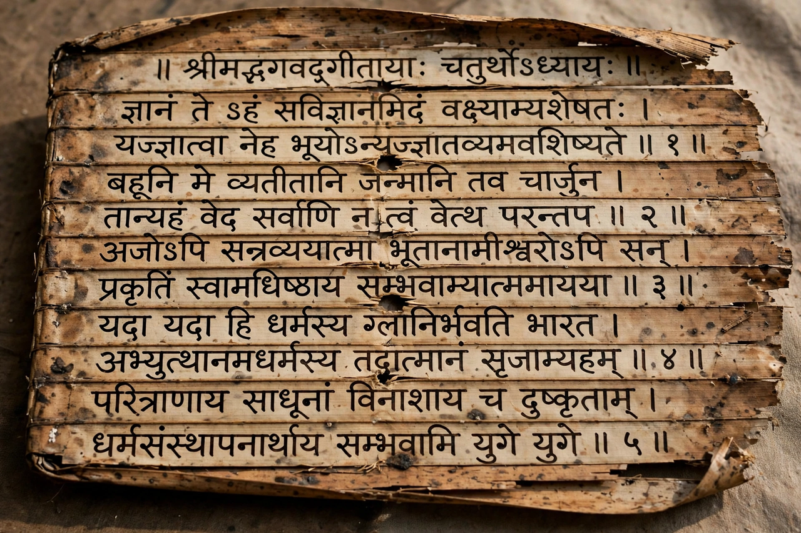

Sanskrit

Region: South Asia; liturgical language of Hinduism, Buddhism and Jainism
Era: Vedic Sanskrit from c. 1500 BCE; Classical Sanskrit codified c. 500 BCE
Language family: Indo-European → Indo-Iranian → Indo-Aryan
Writing system: Devanagari and many regional scripts; historically Brahmi scripts
Sanskrit (संस्कृतम्, "perfected/refined") is a classical language of South Asia belonging to the Indo-Aryan branch of the Indo-European family. It is the sacred language of Hinduism and the liturgical language of Mahayana Buddhism and Jainism, and one of the 22 scheduled languages of India. Sanskrit literature spans more than three thousand years, from the hymns of the Rigveda (c. 1500–1200 BCE) through the epics Mahābhārata and Rāmāyaṇa to the poetry and drama of Kālidāsa.
History and grammar
The oldest form, Vedic Sanskrit, was the language of the Vedas. Around the 5th century BCE the grammarian Pāṇini codified the language in his Aṣṭādhyāyī, a work of some 4,000 rules whose precision still impresses linguists; the resulting Classical Sanskrit remained a pan-Indian medium of scholarship, science and courtly literature for two millennia. The vernacular Prakrits meanwhile evolved into modern Indo-Aryan languages such as Hindi. Sir William Jones's 1786 observation of Sanskrit's systematic kinship with Greek and Latin helped launch comparative linguistics and the Indo-European hypothesis.
Features
Sanskrit is richly inflected, with eight cases, three genders, three numbers (including a dual), an elaborate system of sandhi (sound changes at word boundaries) and extensive compounding. Its phonetic tradition classified sounds by place and manner of articulation with scientific rigour. See Grammar and Phonetics.